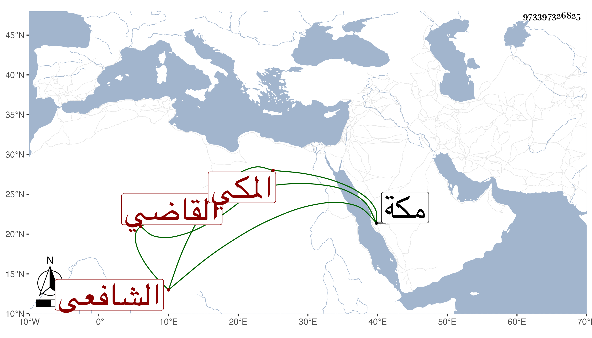

0902Sakhawi.DawLamic.ITO20230111-ara1.EIS1600.973397326825
Biography ID: 973397326825
470
عبد الرحيم بن محمد بن حسن بهاء الدين خواجة بن القاضي الفاضل الشمس بن فخر القضاة والأكابر القاضي إمام الدين المكي الأصل الاردستاني الشافعي تلميذ فضل الله الآتي . شاب فاضل سمع مني وعلي بمكة ما سمعه وقرأه شيخه المشار إليه وكتبت له في مجموعه .
